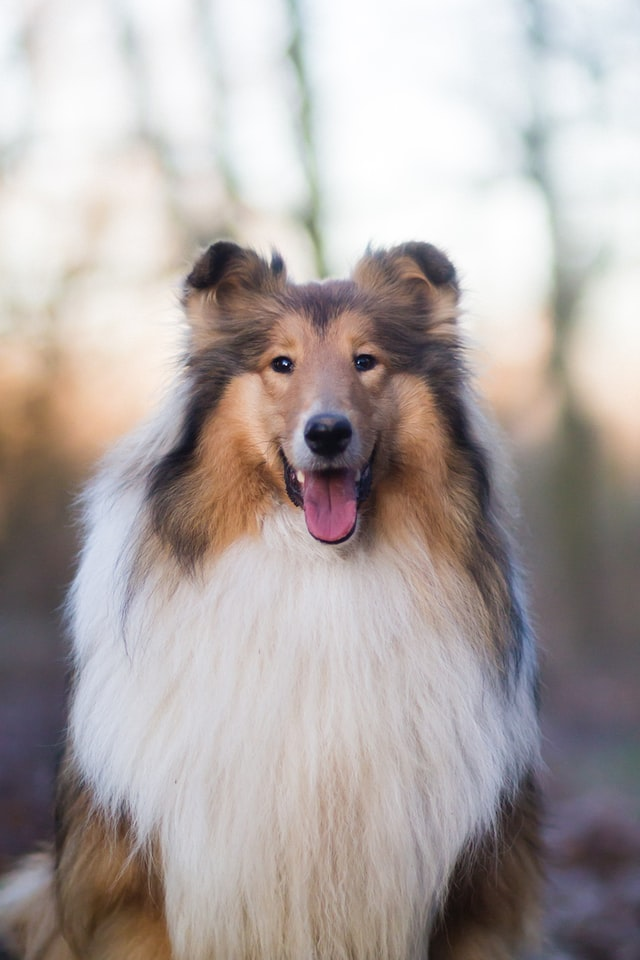

Collie

From Wikipedia: Collie.
Collies form a distinctive type of herding dogs, including many related landraces and standardized breeds. The type originated in Scotland and Northern England. Collies are medium-sized, fairly lightly-built dogs, with pointed snouts. Many types have a distinctive white color over the shoulders. Collies are very active and agile, and most types of collies have a very strong herding instinct. Collie breeds have spread through many parts of the world (especially Australia and North America), and have diversified into many varieties, sometimes mixed with other dog types. Some collie breeds have remained as working dogs for herding cattle, sheep, and other livestock, while others are kept as pets, show dogs or for dog sports, in which they display great agility, stamina and trainability. While the American Kennel Club has a breed they call "collie", in fact collie dogs are a distinctive type of herding dog inclusive of many related landraces and formal breeds. There are usually major distinctions between show dogs and those bred for herding trials or dog sports: the latter typically display great agility, stamina and trainability, and, more importantly, sagacity.
Common use of the name "collie" in some areas is limited largely to certain breeds—the name means Rough Collie by default in parts of the United States, and Border Collie in many rural parts of Great Britain. Many collie dog types do not actually include "collie" in their name (see Welsh Sheepdog at right).
Name
The exact origin of the name collie is uncertain; it may derive from the Scots word for 'coal'.[1] Alternatively it may come from the related word coolly, referring to the black-faced mountain sheep of Scotland.[2] The collie name usually refers to dogs of Scottish origin which have spread into many other parts of the world, often being called sheepdog or shepherd dog elsewhere.[3]
Description
Appearance
Collies are generally medium-sized dogs of about 22 to 32 kg (48 to 70 lb) and light to medium-boned. Cattle-herding types are more stocky. The fur may be short, or long, and the tail may be smooth, feathered, or bushy. In the 1800s, the occasional naturally bob-tailed dog would occur. The tail can be carried low with an upward swirl, or may be carried higher but never over the back. Each breed can vary in coloration, with the usual base colors being black, black-and-tan, red, red-and-tan, white with a colored head with it without other body coloration of sable, black and tan, blue merle, sable merle sable. They often have white along with the main color, usually under the belly and chest, over the shoulders, and on parts of the face and legs, but sometimes leaving only the head colored – or white may be absent (unusual) or limited to the chest and toes (as in the Australian Kelpie). Merle coloration may also be present over any of the other color combinations, even in landrace types. The most widespread patterns include sable, black and white, black and tan and tricolour (black-and-tan and white).
Temperament
Collies range in trainability from the "average" to very biddable. The Border Collie is also the breed most in need of a job, while other collie breeds fit well into an active family lifestyle. The breed is also known for its sensitivity and awareness of emotions in people.[4]